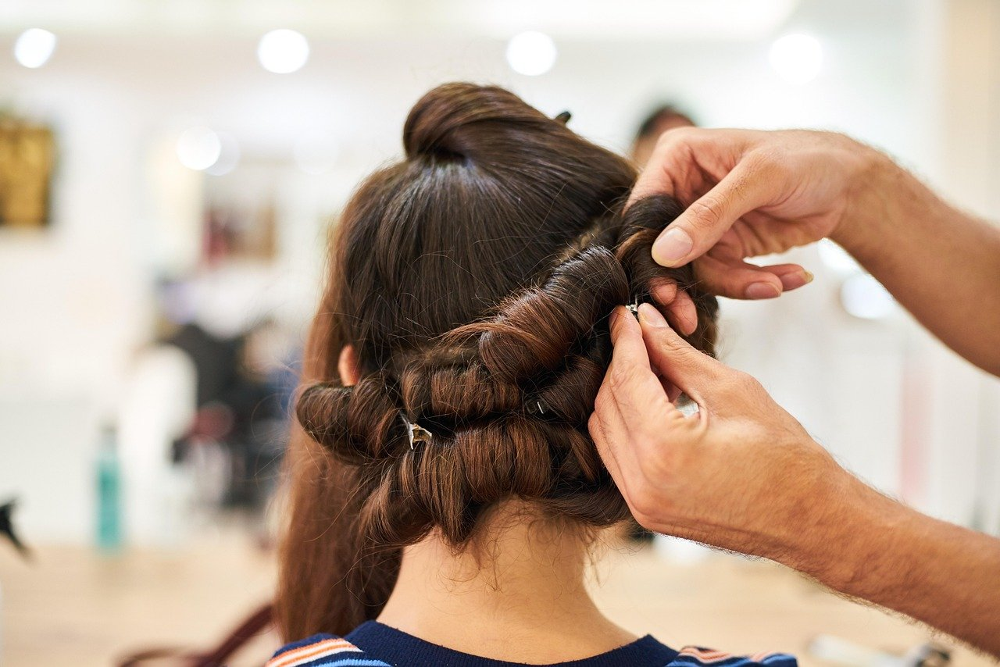
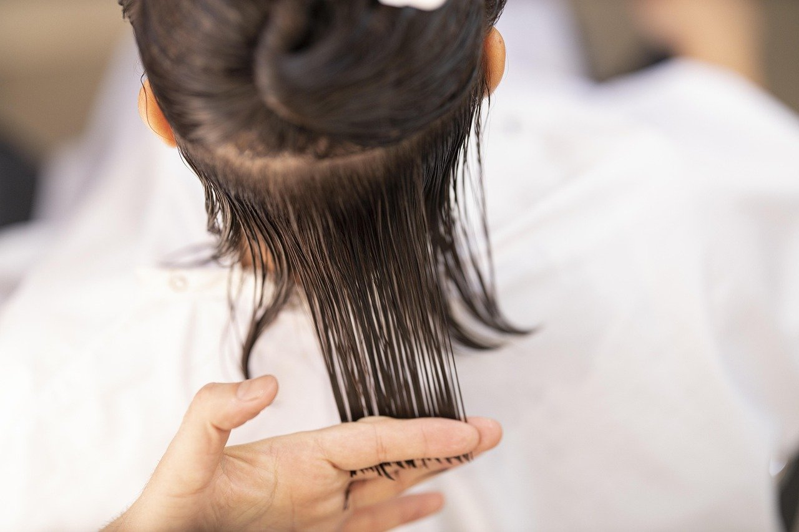
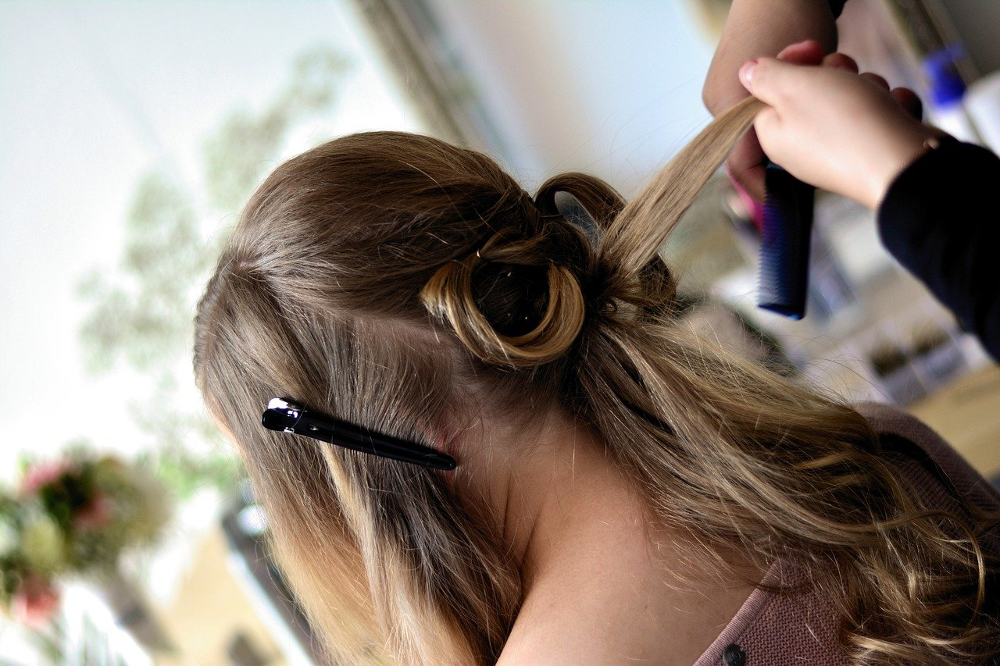

Salon de coafură pentru femei, pe Șoseaua Fundeni.Colentina, Sector 2, București
Coafură pentru femei, în Colentina
La Stely beauty salon, fiecare clientă primește atenție la detalii, de la spălat până la coafatul final. Lucrăm cu toate tipurile de păr și adaptăm coafura stilului tău.
Salonul este pe Șoseaua Fundeni, în cartierul Colentina din Sectorul 2. Poți veni pentru o tunsoare de întreținere sau pentru o coafură de eveniment.

-
Produse profesionale
Folosim produse profesionale pentru păr, la spălat, vopsit și tratamente.
-
Atmosferă relaxată
Salonul este un loc prietenos, în care te simți ca acasă.
-
În Colentina
Salonul este pe Șoseaua Fundeni, în Sectorul 2 al Bucureștiului.
Servicii
Exemple — de completat cu ofertele dvs.
Servicii pentru femei, pentru toate tipurile de păr. Pentru detalii despre un serviciu, sună la salon.
-
tuns
Tunsori scurte, medii sau lungi, ori doar vârfurile împrospătate.
-
coafat
Coafuri pentru zilele obișnuite și pentru evenimente: bucle, onduleuri sau păr întins.
-
vopsit
Vopsit pe toată lungimea, acoperirea firelor albe sau reîmprospătarea culorii.
-
spălat și aranjat
Spălat, uscat și aranjat cu peria sau cu placa, ca să pleci gata pentru ziua ta.
-
tratamente pentru păr
Îngrijire pentru părul uscat, vopsit des sau obosit de uscător și placă.
Galerie
Fotografii ilustrative cu tunsori, vopsit și coafat. Apasă pe o fotografie ca să o vezi mai mare.


Înainte să vii
Programări și întrebări
Pentru programare la oricare dintre serviciile salonului sau pentru întrebări, sună la 0761 158 239.
Adresa
Salonul este pe Șoseaua Fundeni, Colentina, Sector 2, București. Traseul îl găsești pe Google Maps.
Ne găsești pe Șoseaua Fundeni
Șoseaua Fundeni, Colentina, Sector 2, București 0761 158 239Sună și stabilim ora programării.